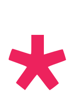

 p5 : références
Basthon propose la bibliothèque p5, qui permet de réaliser rapidement des constructions graphiques et des animations. La bibliothèque propose l'essentiel des fonctions de p5.js, avec la syntaxe de python. En particulier, il ne s'agit pas de la bibliothèque p5 disponible dans d'autres IDE.
Structure du programme
Les fonctions setup(), draw() et run()
Le programme doit contenir deux fonctions, setup() et draw(), et l'exécution est lancée à l'aide de l'instruction run().
Lorsque l'on exécute l'instruction run(), la fonction setup() est exécutée une fois :
def setup():
createCanvas(800,600)
# instructions de paramétrage de l'affichage
createCanvas sont affectées automatiquement à deux variables systèmes : width pour le premier paramètre et height pour le second.La fonction
update_variables() permet de forcer la mise à jour
des variables width et height, par exemple pour utiliser leurs valeurs dans la fonction setup.
Puis la fonction draw() est ensuite exécutée en boucle, après l'exécution de setup():
def draw():
# instructions de dessin
L'instruction stop() met fin à l'exécution du programme :
stop()
Complément : la fonction preload
Il est possible de charger des données avant l'exécution de setup(). On peut par exemple charger une image dans la fonction preload puis l'afficher depuis la fonction setup(). Dans ce cas, l'appel de la fonction run doit préciser d'exécuter la fonction preload.
Exemple :
def preload():
global background_img
background_img = loadImage(url)
def setup():
createCanvas(700,700)
background(background_img)
def draw():
pass
run(preload=preload)
Variables système
| variable | description |
|---|---|
| windowWidth, windowHeight | Dimensions de la fenêtre |
| width, height | Dimensions de la zone de dessin. Les valeurs de width et height sont définies par les paramètres de la fonction createCanvas(). |
Voir également les paragraphes Touches du clavier et Souris.
Rafraîchissement
| syntaxe | description |
|---|---|
| frameCount | Nombre d'images affichées depuis le démarrage du programme. |
| frameRate() getFrameRate() |
Renvoie le nombre d'images affichées chaque seconde. |
| frameRate(valeur) setFrameRate(valeur) |
Spécifie le nombre d'images à afficher chaque seconde. |
| noLoop() | Si cette instruction est présente dans la fonction setup la fonction draw sera exécutée une seule fois. Si cette instruction est présente dans la fonction draw, les instructions de la fonction draw en cours sont exécutées (il n'y a pas d'interruption) mais celle-ci ne sera pas appelée à nouveau. |
| loop() | Relance l'exécution en boucle de draw(). |
Couleurs
Désigner une couleur
| syntaxe | description |
|---|---|
| 'red' | nom de couleur |
| 120 | niveau de gris : 0 - 255 |
| (100, 125, 255) | couleur r, v, b (décimal) : 0 - 255 |
| '#2aff95' | couleur r, v, b (hexadécimal) : 00 - ff |
| (255, 0, 0, 50) | couleur r, v, b, alpha |
| color(0, 0, 255) | objet p5.Color |
On peut également déterminer une couleur à l'aide de la fonction d'interpolation linéaire lerpColor:
lerpColor(couleur1, couleur2, coefficient) détermine une couleur intermédiaire entre couleur1 et couleur2. coefficient est un nombre entre 0 et 1. Plus coefficient est proche de 0, plus la couleur obtenue est proche de couleur1, et plus coefficient est proche de 1, plus la couleur obtenue est proche de couleur2.
Dessiner en couleur
| syntaxe | description |
|---|---|
| background(couleur) | Définit la couleur d'arrière-plan de la zone de dessin (255 par défaut). |
| fill(couleur) | Définit la couleur de remplissage des formes (255 par défaut). |
| noFill() | Désactive la couleur de remplissage. |
| stroke(couleur) | Définit la couleur de tracé des formes (0 par défaut). |
| noStroke() | Désactive le tracé du contour des figures. |
Si noFill() et noStroke() sont exécutées en même temps, rien n'est tracé dans la zone de dessin.
Analyser une couleur
| syntaxe | description |
|---|---|
| alpha(couleur) | renvoie le niveau de transparence de couleur sur une échelle de 0 (transparence totale) à 255 (opaque) |
| blue(couleur) | renvoie le niveau de bleu de couleur sur une échelle de 0 à 255. |
| green(couleur) | renvoie le niveau de vert de couleur sur une échelle de 0 à 255. |
| red(couleur) | renvoie le niveau de rouge de couleur sur une échelle de 0 à 255. |
Formes
Primitives 2d
L'origine du repère est située en haut à gauche. Les abscisses augmentent de gauche à droite, les ordonnées augmentent de haut en bas.

| syntaxe | description |
|---|---|
| point(x, y) | Trace un point de coordonnées (x, y). |
| line(x1, y1, x2, y2) | Trace un segment reliant les deux points de coordonnées (x1, y1) et (x2, y2). |
| circle(x, y, diametre) | Tracer un cercle dont le centre a pour coordonnées (x, y) et dont le diamètre prend la valeur fixée. |
| ellipse(x, y, largeur, hauteur) | Tracer une ellipse dont le centre a pour coordonnées (x, y) et dont la largeur et la hauteur prennent les valeurs fixées. |
| arc(x, y, largeur, hauteur, angleDebut, angleFin) | Trace un arc de l'ellipse définie par ellipse(x, y, largeur, hauteur) entre les points repérés par les angles angleDébut et angleFin (en radians). |
| square(x, y, cote) | Trace un carré dont le sommet en haut à gauche a pour coordonnées (x, y) et dont le côté prend la valeur fixée. |
| rect(x, y, largeur, hauteur) | Trace un rectangle dont le sommet en haut à gauche a pour coordonnées (x, y), et dont la largeur et la hauteur prennent les valeurs fixées. |
| triangle(x1, y1, x2, y2, x3, y3) | Trace un triangle dont les trois sommets ont pour coordonnées (x1, y1), (x2, y2), et (x3, y3). |
| quad(x1, y1, x2, y2, x3, y3, x4, y4) | Trace un quadrilatère dont les quatre sommets ont pour coordonnées (x1, y1), (x2, y2), (x3, y3) et (x4, y4). |
Tracés
| syntaxe | description |
|---|---|
| strokeWeight(epaisseur) | Définit l'épaisseur du tracé en pixels (par défaut : 1 pixel). |
| noStroke() | Désactive le tracé du contour des figures. |
| strokeCap(style) | Définit le style de rendu des extrémités de ligne. Ces extrémités sont soit arrondies, carrées ou étendues, chacune spécifiée avec les paramètres correspondants: ROUND, SQUARE et PROJECT (par défaut : ROUND). |
Textes
| syntaxe | description |
|---|---|
| text(chaine, x, y) | Affiche la chaine à la position (x, y) |
| text(chaine, x, y, largeur, hauteur) | Affiche la chaine à la position (x, y) dans une boite de dimensions largeur x hauteur |
| textAlign(alignement_horizontal) textAlign(alignement_horizontal, alignement_vertical) |
Spécifie l'alignement horizontal parmi LEFT, CENTER, et RIGHT et l'alignement vertical parmi TOP, BOTTOM, CENTER, et BASELINE |
| textFont(police) textFont(police, taille) |
Spécifie la police de caractères et éventuellement sa taille |
| textLeading(interligne) | Spécifie la taille en pixels de l'espace entre deux lignes de texte |
| textSize(taille) | Spécifie la taille de la police de caractères |
| textStyle(style) | Spécifie le style parmi NORMAL, ITALIC, BOLD et BOLDITALIC |
| textAscent(chaine) | Valeur maximale en pixels de la hauteur des caractères de chaine, au-dessus de la ligne de base |
| textDescent(chaine) | Valeur maximale en pixels de la hauteur des caractères de chaine, en-dessous de la ligne de base |
| textWidth(chaine) | Largeur en pixels de l'affichage de chaine, dans la police et taille actuelles |
Voir aussi loadFont sur p5.js
Événements
Touches du clavier
| syntaxe | description |
|---|---|
| key | Nom de la dernière touche appuyée. |
| keyCode | Code de la dernière touche appuyée. |
| keyIsPressed isKeyPressed |
Vaut True lorsqu'une touche du clavier est appuyée et False sinon. |
| keyIsDown(code) keyIsDown(touche) |
Vaut True si la touche concernée est appuyée et False sinon. |
Souris
| syntaxe | description |
|---|---|
| mouseX, mouseY | Coordonnées du pointeur de la souris |
| pmouseX, pmouseY | Précédentes coordonnées du pointeur de la souris |
| mouseIsPressed | Vaut Truesi la souris est cliquée, et False sinon. |
| movedX | Mouvement horizontal du pointeur de la souris depuis la dernière exécution de draw() |
| movedY | Mouvement vertical du pointeur de la souris depuis la dernière exécution de draw() |
Mathématiques
Angles
| syntaxe | description |
|---|---|
| angleMode(mode) | Définit l'unité de mesure des angles. mode peut prendre la valeur RADIANS ou la valeur DEGREES. La valeur par défaut est RADIANS. |
| cos(), sin(), tan() | Fonctions trigonométriques usuelles |
| degrees(mesure) radians(mesure) |
Convertit une mesure d'angle en degrés ou en radians |
| HALF_PI, PI, QUARTER_PI, TWO_PI | Constantes permettant respectivement d'approcher les valeurs de \(\frac \pi 2\), \(\pi\), \(\frac \pi 4\), \(2\pi\) |
Images
Charger une image
| syntaxe | description |
|---|---|
| loadImage(chemin) | Charge une image à partir d'un chemin et crée un objet de classe p5.Image. Si nécessaire, l'image peut être préchargée en plaçant l'appel à la fonction loadImage dans la fonction preload. |
Afficher une image
| syntaxe | description |
|---|---|
| background(p5.Image) | Affiche une p5.Image en fond d'écran |
| image(p5.Image, x, y) | Affiche une p5.Image en plaçant le pixel en haut à gauche au point de coordonnées (x, y) dans la zone de dessin. |
Créer une image
| syntaxe | description |
|---|---|
| createImage(largeur, hauteur) | Crée un objet de type p5.Image |
Modifier une image
| syntaxe | description |
|---|---|
| img.loadPixels() | Méthode qui crée le tableau des pixels de img. |
| img.get(x, y) | Méthode qui permet de lire la couleur du pixel de coordonnées (x, y) de img. |
| img.set(x, y, couleur) | Méthode qui permet de spécifier la couleur du pixel de coordonnées (x, y) de img. |
| img.updatePixels() | Méthode qui met à jour le tableau des pixels de img. |